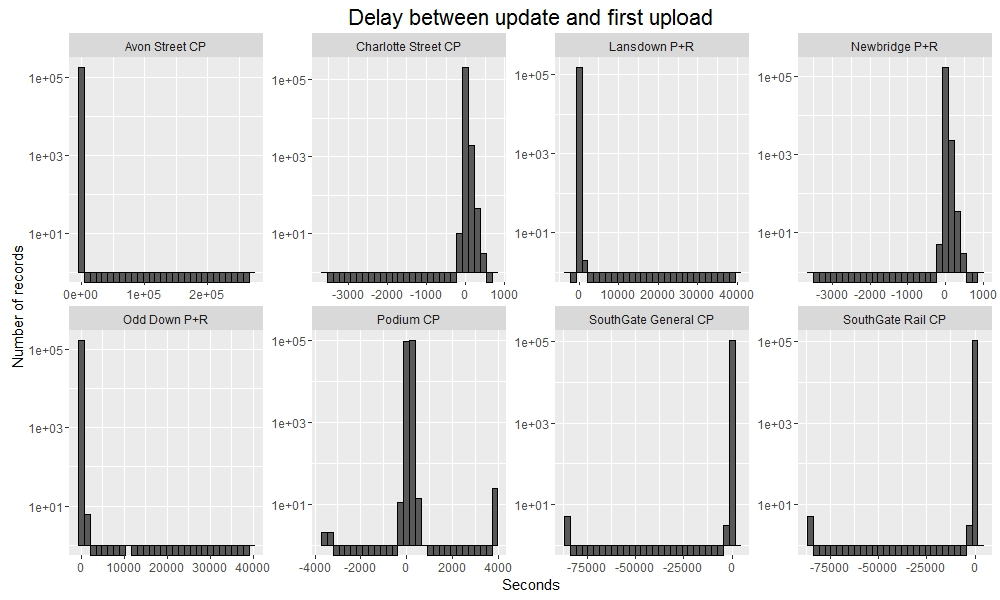
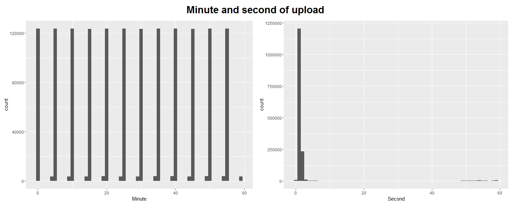
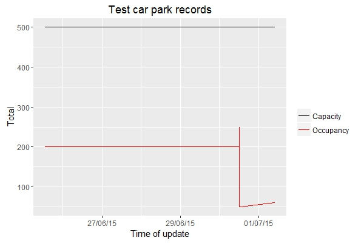
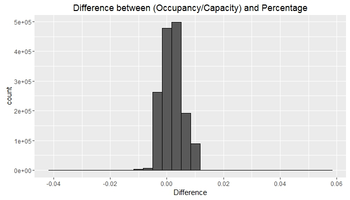

Day 21 (02/12/16): Delay to first upload
Perhaps the DateUploaded column can give us some help in working out why we have duplicate records.
Let’s do a similar test to the one from a couple of days ago, to see if the upload time is different for records with the same update time.
```rdf3 <- filter(df0, Name != “test car park”) %>% group_by(Name, LastUpdate, DateUploaded) %>% filter(n() > 1)
df3rconsole## Source: local data frame [0 x 12] ## Groups: Name, LastUpdate, DateUploaded [0] ## ## # … with 12 variables: ID <p>Ah-ha! An empty dataframe! So it looks like the duplicate records are caused by the same record being uploaded at multiple different times.</p> <p>Let’s take the first upload only, and create a plot similar to yesterday’s.</p>rdf4 <- df0 %>% select(Name, LastUpdate, DateUploaded) %>% filter(Name != “test car park”) %>% mutate(LastUpdate = as.POSIXct(LastUpdate, tz = “UTC”, format = “%d/%m/%Y %I:%M:%S %p”), DateUploaded = as.POSIXct(DateUploaded, tz = “UTC”, format = “%d/%m/%Y %I:%M:%S %p”)) %>% group_by(Name, LastUpdate) %>% summarize(FirstUpload = min(DateUploaded)) %>% mutate(Delay = as.numeric(FirstUpload - LastUpdate))
p <- ggplot(df4, aes(x = Delay)) + geom_histogram(colour = “black”) + facet_wrap(~ Name, nrow = 2, scales = “free”) + ggtitle(“Delay between update and first upload”) + xlab(“Seconds”) + ylab(“Number of records”) + theme(plot.title = element_text(size = rel(1.5))) + scale_y_log10()
p``` Note that wherever the histogram displays a bar below the axis, this shows zero records in that bin, since we are using a log scale (and the value shown is therefore log10(0) = -Inf); and by similar logic, wherever the histogram shows 0 there is 1 record in that bin (for example, at the extreme right of the Avon Street CP plot).
We can see that for most of the car parks, there is a single record at any extreme values (e.g. that 1 record from Avon Street - the largest delay by a huge margin). However, there are multiple dodgy records at Podium CP and the SouthGate CPs.
Day 22 (03/12/16): Minute and second of upload
Let’s have a look at when records are uploaded to the online database.
```rdf3 <- select(df0, Name, DateUploaded) %>% mutate(DateUploaded = as.POSIXct(DateUploaded, tz = “UTC”, format = “%d/%m/%Y %I:%M:%S %p”)) %>% mutate(Minute = minute(DateUploaded), Second = second(DateUploaded))
p1 <- ggplot(df3, aes(x = Minute)) + geom_histogram(binwidth = 1) p2 <- ggplot(df3, aes(x = Second)) + geom_histogram(binwidth = 1)<p>I thought it was time to try out another new package! (Well, new to me…)</p>rlibrary(grid)
grid.newpage() pushViewport(viewport(layout = grid.layout(2, 2, heights = unit(c(0.5, 5), “null”))))
grid.text(“Minute and second of upload”, vp = viewport(layout.pos.row = 1, layout.pos.col = 1:2), gp = gpar(fontsize = 22, fontface = 2))
print(p1, vp = viewport(layout.pos.row = 2, layout.pos.col = 1)) print(p2, vp = viewport(layout.pos.row = 2, layout.pos.col = 2))``` We can see that records are uploaded promptly every 5 minutes or so, as claimed by the documentation of the database; and that records tend to be uploaded ‘on the minute’.
Day 23 (04/12/16): Upload batch sizes and proportions
We saw yesterday that records are uploaded in batches roughly every 5 minutes. But how many records are usually uploaded in one of these batches? And which car parks, if any, “skip” updates?
```rdf2 <- select(df0, Name, DateUploaded) %>% filter(Name != “test car park”) %>% group_by(DateUploaded) %>% mutate(batch_size = n())
p <- ggplot(df2, aes(x = batch_size))
p1 <- p + geom_bar() + xlab(“Batch size”) + ylab(“Number of batches”) p2 <- p + geom_bar(aes(fill = Name), position = “fill”) + xlab(“Batch size”) + ylab(“Proportion of batches where present”)
library(grid) grid.newpage() pushViewport(viewport(layout = grid.layout(2, 2, heights = unit(c(0.5, 5),“null”), widths = unit(c(1, 2), “null”)))) grid.text(“Upload batch sizes and proportions”, vp = viewport(layout.pos.row = 1, layout.pos.col = 1:2), gp = gpar(fontsize = 25, fontface = 2)) print(p1, vp = viewport(layout.pos.row = 2, layout.pos.col = 1)) print(p2, vp = viewport(layout.pos.row = 2, layout.pos.col = 2))```
So we can see that most batches are of size 8, as expected (these presumably contain one record per car park for each of the 8 car parks), but there are also many smaller batches - some as small as 4 records.
We can also see which car parks are contributiong to these smaller batches, and therefore work out which ones aren’t (i.e. the ones skipping updates).
Day 24 (05/12/16): Name == “test car park”
With a coursework deadline looming, I am struggling both for time and ideas - bear with me, the next few days may be a little rough…
I’ve been filtering out the records from “test car park” for most of the last month. I think it’s high time we had a look at them.
```rdf2 <- filter(df, Name == “test car park”)
library(scales)
p <- ggplot(df2, aes(x = LastUpdate)) + geom_line(aes(y = Occupancy, colour = “Occupancy”)) + geom_line(aes(y = Capacity, colour = “Capacity”)) + ggtitle(“Test car park records”) + xlab(“Time of update”) + ylab(“Total”) + scale_x_datetime(labels = date_format(“%d/%m/%y”))+ scale_colour_manual(name = ““, values = c(”black”, “red”))
p``` Admittedly not particularly interesting or informative, but probably the cleanest and most error-free data we’ve seen so far.
Day 25: Calculation of Percentage
There is one more thing I can check about the data: how is the Percentage column calculated? Given that it contains integer values, there must be some rounding involved - perhaps we can see whether values are rounded up or down, or to the nearest integer.
```rdf4 <- select(df0, LastUpdate, Capacity, Occupancy, Percentage) %>% mutate(newPercentage = (Occupancy / Capacity), Difference = (newPercentage - (Percentage/100)))
p <- ggplot(df4, aes(x = Difference)) + geom_histogram(colour = “black”, bins = 30) + ggtitle(“Difference between (Occupancy/Capacity) and Percentage”)
p``` Although not entirely clear, the bulk of the observations lie to the right of zero. It seems, then, that the result of the (Occupancy/Capacity) calculation is rounded down to give the Percentage column.